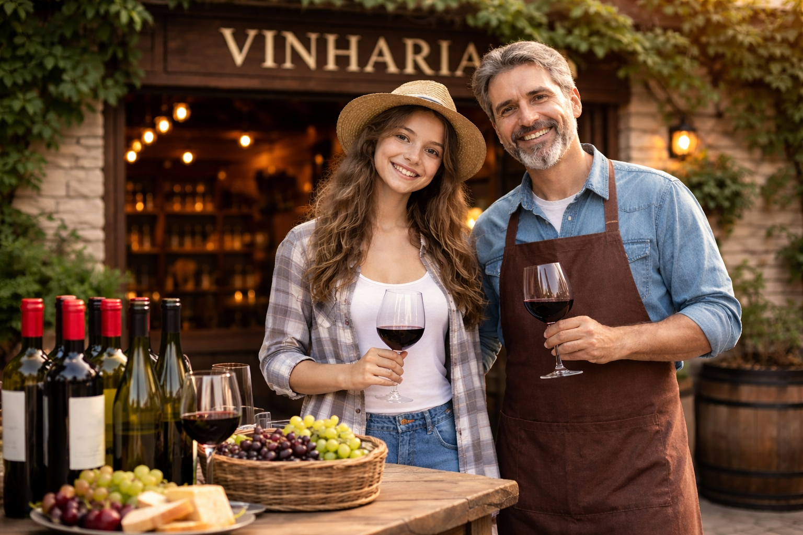

O mundo dos vinhos mais perto de você!
A Vinharia Agnello é uma empresa que atua há mais de 15 anos no mercado de vinhos, oferecendo qualidade, variedade e principalmente um atendimento próximo aos seus clientes.
Nosso objetivo é ajudar cada pessoa a escolher o vinho ideal para cada situação que qeur ser vivida naquele momento, tornando a experiência de compra mais simples e agradável para o consumidor.

Conheça nossa proposta
Este site foi criado para apresentar a história da Vinharia Agnello, alguns de nossos produtos, dicas de harmonização nas refeições e um canal de contato com os clientes diretamente com a nossa equipe.
Vídeo sobre vinhos
Caso esteja interessado em entrar no mundo dos vinhos, veja o vídeo sobre como é o funcionamento de sua produção